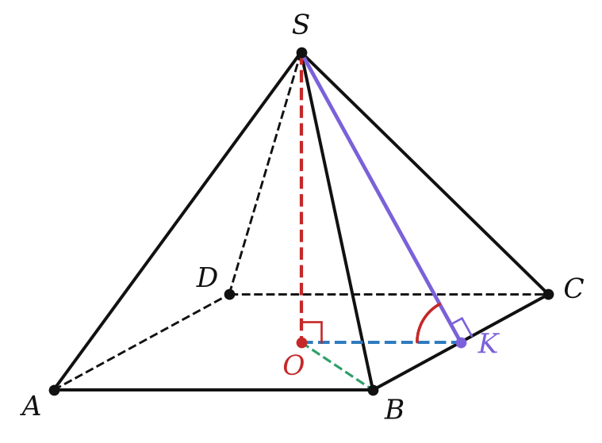
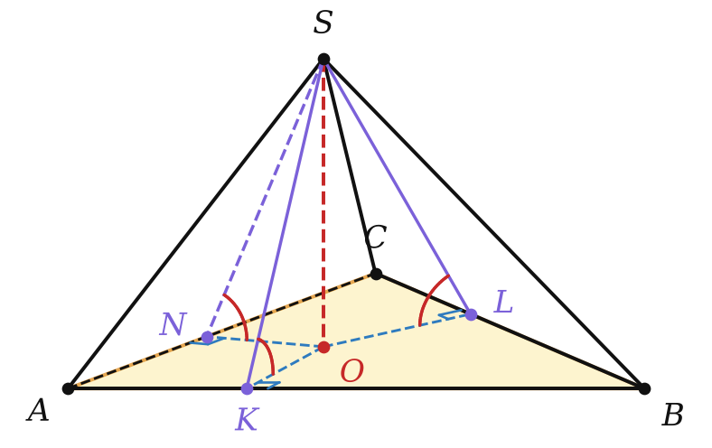
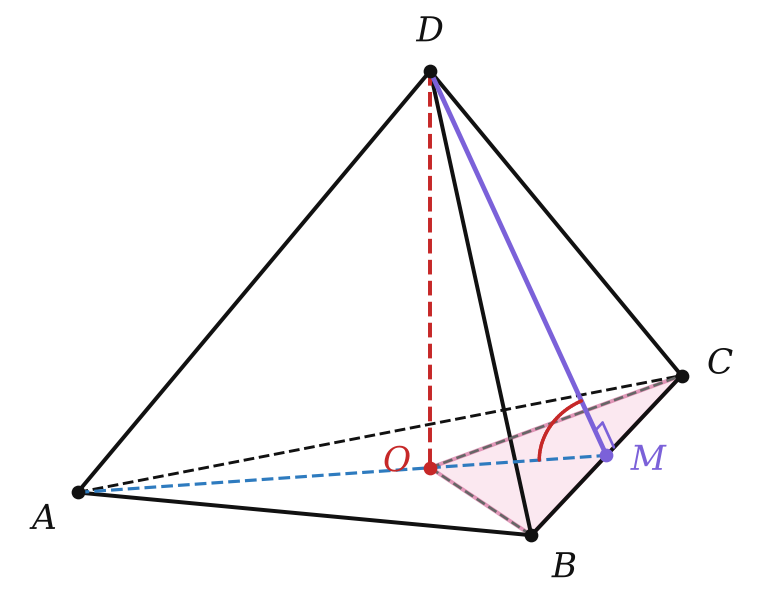

Теория
Многогранник, одна грань которого — n-угольник, а остальные грани — треугольники с общей вершиной, называют n-угольной пирамидой.
Треугольники — боковые грани, их общая вершина — вершина пирамиды, n-угольник — основание; рёбра, выходящие из вершины, — боковые рёбра. У n-угольной пирамиды n + 1 вершин, 2n рёбер и n + 1 граней.
Высота пирамиды — перпендикуляр, опущенный из вершины на плоскость основания.
Диагональное сечение — сечение плоскостью, проходящей через два боковых ребра, не лежащих в одной грани; это треугольник, основание которого — диагональ основания пирамиды.
Основание высоты пирамиды не обязано лежать внутри основания и не обязано совпадать с какой-то «особой» точкой. Где оно лежит, нужно доказать из условия (см. ниже).
Правильная пирамида
Пирамиду называют правильной, если её основание — правильный многоугольник, а основание высоты — центр этого многоугольника.

У правильной четырёхугольной пирамиды основание — квадрат, высота падает в точку пересечения диагоналей; у правильной треугольной — в точку пересечения медиан. Правильную треугольную пирамиду, у которой все грани равны, называют правильным тетраэдром.
- Все боковые рёбра правильной пирамиды равны (равные прямоугольные треугольники SOA, SOB, … с общим катетом SO и равными катетами OA = OB = R).
- Все боковые грани — равные равнобедренные треугольники.
Апофема правильной пирамиды — высота боковой грани, проведённая из вершины пирамиды. Все апофемы правильной пирамиды равны.
Апофема SK падает в середину ребра основания (боковая грань равнобедренная). OK = r — радиус вписанной окружности основания, и по теореме о трёх перпендикулярах ∠SKO — линейный угол двугранного угла при ребре основания. Полезные треугольники: SO² + r² = SK² и SO² + R² = SA².
Площадь поверхности
Sполн = Sбок + Sосн, где Sбок — сумма площадей боковых граней.
Площадь боковой поверхности правильной пирамиды равна половине произведения периметра основания на апофему: Sбок = ½ Pосн · d.
Каждая из n боковых граней — треугольник с основанием a и высотой d, его площадь ½ad. Граней n, и все они равны: Sбок = n · ½ad = ½(na)d = ½Pосн · d. ∎
Куда проектируется вершина
Если боковые рёбра пирамиды равны (или образуют равные углы с плоскостью основания), то вершина проектируется в центр описанной окружности основания.
Это ключевая задача 1 из § 11: равные наклонные имеют равные проекции, OA = OB = OC = …
Если все двугранные углы выпуклой пирамиды при рёбрах основания равны α, то: 1) вершина проектируется в центр вписанной окружности основания; 2) Sбок = Sосн / cos α.

1) Опустим высоту SO и перпендикуляры OK, OL, ON к сторонам основания. По теореме о трёх перпендикулярах SK, SL, SN перпендикулярны сторонам, поэтому углы SKO, SLO, SNO — линейные, они равны α. Прямоугольные треугольники с общим катетом SO и равными углами равны: OK = OL = ON. Точка внутри основания, равноудалённая от сторон, — центр вписанной окружности.
2) Проекция каждой боковой грани на основание — треугольник с вершиной O; по теореме о площади проекции (§ 16) S(AOB) = S(ASB) cos α. Сложив по всем граням: Sосн = Sбок cos α. ∎
Если сказано лишь, что боковые грани образуют с основанием равные углы (а не равные двугранные углы), вершина может проектироваться и в центр вневписанной окружности — вне основания. Поэтому внимательно читай условие.
Разбор примеров
Сторона основания правильной четырёхугольной пирамиды 6, высота 4. Найдите апофему, площадь полной поверхности и тангенс двугранного угла при ребре основания.
1) OK = r = 3, апофема SK = √(16 + 9) = 5.
2) Sбок = ½ · 24 · 5 = 60, Sосн = 36, Sполн = 96.
3) tg ∠SKO = SO/OK = 4/3.

Сторона основания правильной треугольной пирамиды 6, боковое ребро 4. Найдите высоту и площадь боковой поверхности.
1) R = 6/√3 = 2√3, высота √(16 − 12) = 2.
2) Апофема — высота равнобедренной грани с боковой стороной 4 и основанием 6: √(16 − 9) = √7. Sбок = ½ · 18 · √7 = 9√7.
Основание пирамиды — треугольник со сторонами 5, 12 и 13, все двугранные углы при рёбрах основания равны 60°. Найдите высоту и площадь боковой поверхности.
1) Вершина проектируется в центр вписанной окружности. Треугольник прямоугольный: r = (5 + 12 − 13)/2 = 2.
2) Высота h = r tg 60° = 2√3.
3) Sосн = 30, Sбок = 30 / cos 60° = 60.
Основание пирамиды — прямоугольник 6 × 8, каждое боковое ребро 13. Найдите высоту.
Вершина проектируется в центр описанной окружности — точку пересечения диагоналей, R = 10/2 = 5. Высота √(169 − 25) = 12.
Задачи урока
Реши в тетради, к каждой задаче — чертёж. Разберём на занятии.
Тест к уроку
Домашнее задание
Задачи Д1–Д6 ниже, к каждой — рисунок с высотой и апофемой. Из учебника: № 21.4, 21.8, 21.16, 21.19. Выучить определения правильной пирамиды и апофемы, теорему 21.1 и оба свойства «куда проектируется вершина».